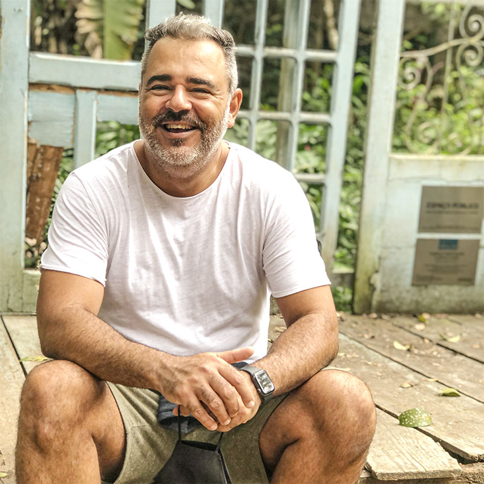

Apresentação
Sobre Mim
Me chamo Jota Nascimento, tenho 47 anos e sou casado.
Comecei um curso de Tecnologia em Sistemas para Internet pela Uninove, mas tranquei a alguns anos.
Tenho um casal de cachorros da raça Schinauzer que, pra mim, são como filhos, Rsrsrs, e inclusive a minha fêmea esta esperando filhotes!
Eu já trabalho com WebDesign a mais de 12 anos e com Wordpress a mais de 10 anos, mas sempre busco melhoras meus conhecimentos.
Sou Geminiano, e com isso agora posso estar super feliz e daqui a pouco super irritado. Mas de boa. Nada muito drástico.
Um dos meus sonhos sempre foi conseguir trabalhar com programação raiz. Digitação de código, entendimento daquele código MATRIX todo.
Tenho certeza que esse curso irá me ajudar rmuito!
Acho que é isso!
